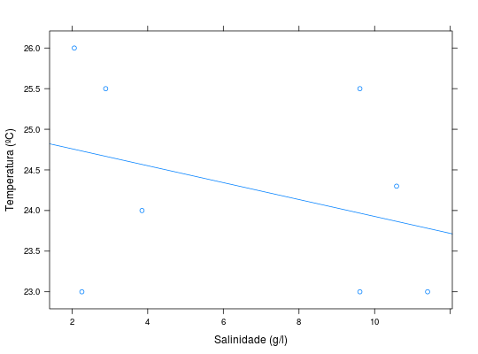
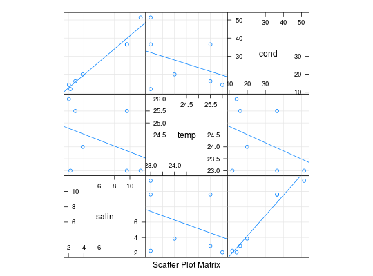

Estudo com o objetivo de verificar se existe correlação entre a salinidade e a temperatura na região III da Lagoa da Conceição, Florianópolis, SC.
Um data.frame com 8 observações e 2 variáveis, em que
tempsalinAndrade, D. F., Ogliari, P. J. (2010). Estatística para as ciências agrárias e biológicas com noções de experimentação (2nd ed.). Florianópolis, SC. Editora da UFSC. (Tabela 2.38, pág. 142)
data(AndradeTb2.38) str(AndradeTb2.38)#> 'data.frame': 8 obs. of 2 variables: #> $ temp : num 24 23 23 26 25.5 25.5 24.3 23 #> $ salin: num 3.85 9.61 2.26 2.06 2.89 ...cor.test(~temp + salin, data = AndradeTb2.38)#> #> Pearson's product-moment correlation #> #> data: temp and salin #> t = -0.89007, df = 6, p-value = 0.4077 #> alternative hypothesis: true correlation is not equal to 0 #> 95 percent confidence interval: #> -0.843256 0.478246 #> sample estimates: #> cor #> -0.3415224 #>library(lattice) xyplot(temp ~ salin, data = AndradeTb2.38, type = c("p", "r"), xlab = "Salinidade (g/l)", ylab = "Temperatura (ºC)")# Agrupando os dados de condutividade, provinientes no dataset # AndradeTb2.46 # help(AndradeTb2.46) (da <- merge(AndradeTb2.38, AndradeTb2.46))#> salin temp cond #> 1 2.06 26.0 14.11 #> 2 2.26 23.0 11.78 #> 3 2.89 25.5 16.10 #> 4 3.85 24.0 19.92 #> 5 9.61 23.0 36.52 #> 6 9.61 25.5 36.52 #> 7 11.40 23.0 51.46splom(da, type = c("g", "p", "r"))